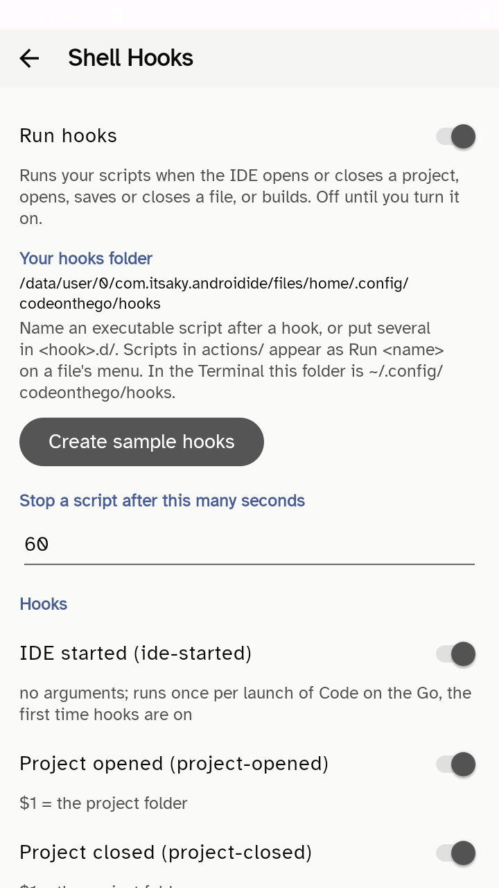
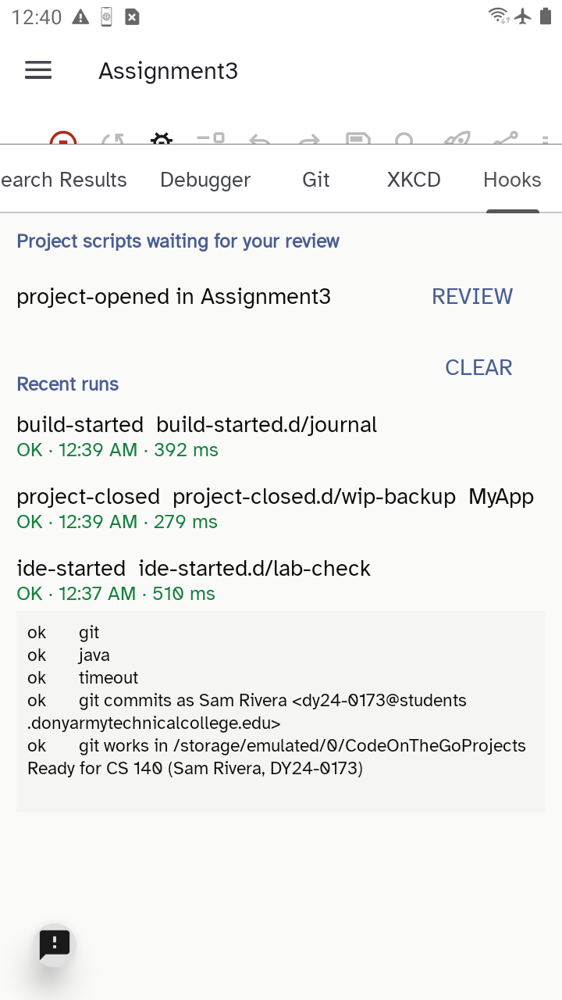
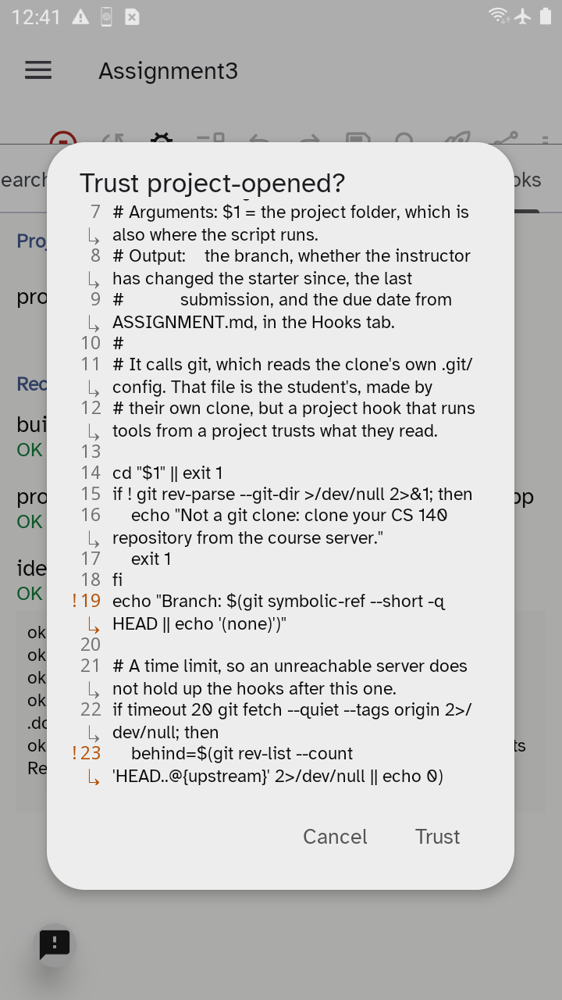
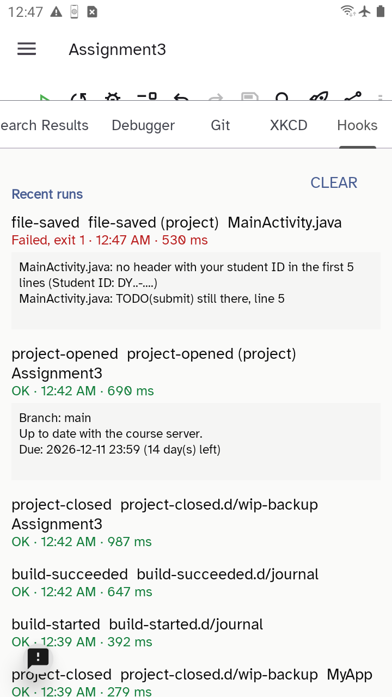
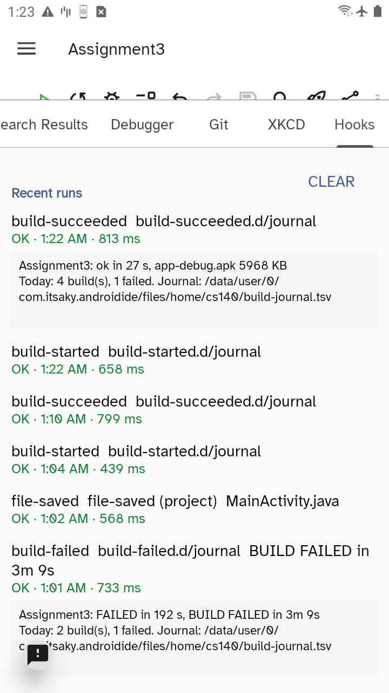
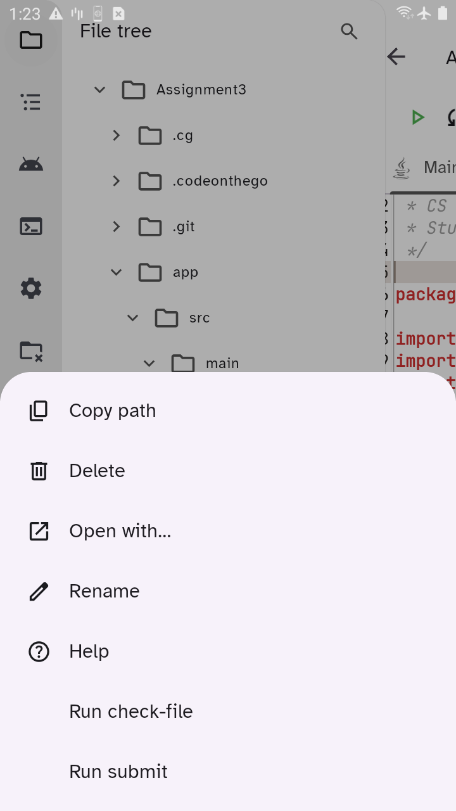
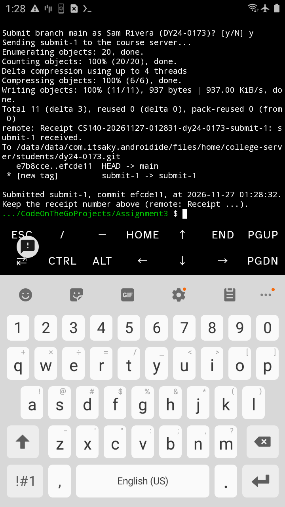
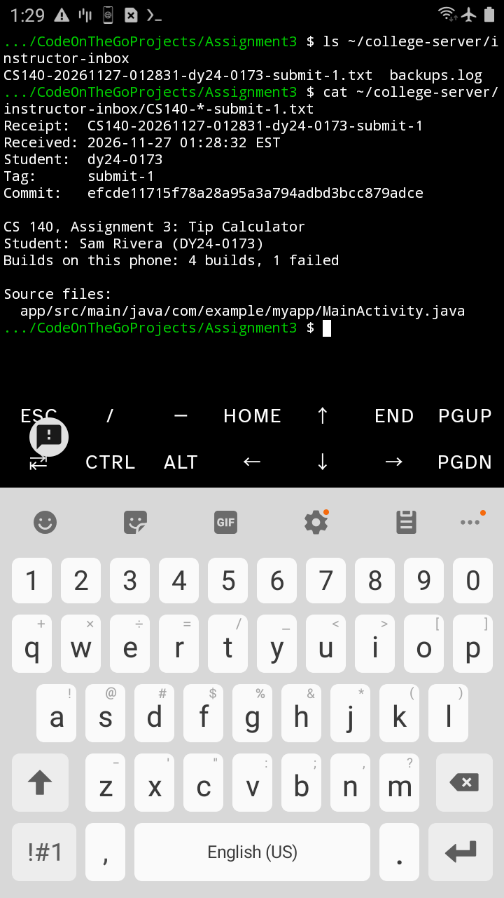
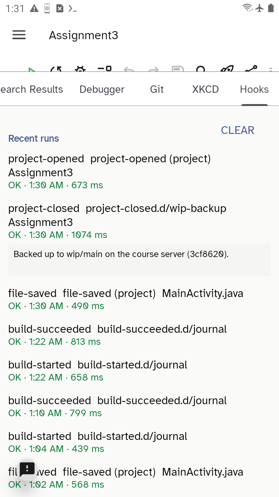

How, when and why to connect Code on the Go to the way your institution already works, with shell scripts.
Don Yarmy Technical College, its course and its people are made up for this example. Shell Hooks is a Code on the Go plugin; this example needs Code on the Go 26.48 or later. A narrated video of the same story goes with this page.
Schools, colleges and companies that teach or build software already have a process: a git server, coding rules, a build record, a way to hand in work, backups. A development environment that cannot take part in that process stands to one side of it, and someone has to bridge the gap by hand.
Shell Hooks lets the people who run that process bridge it themselves. It runs shell scripts at moments in Code on the Go: when the IDE starts, when a project opens or closes, when a file is saved, when a build starts or ends, and when you choose a script from a file's menu. IT staff, instructors and team leads already write such scripts for desktops and servers. With Shell Hooks they need no Android development and no plugin of their own.
It works like git's own hooks: a script named after the moment, in a folder. This page follows one assignment in a made-up course, CS 140, from setting up a student's phone to handing in the work, and gives every script it uses.
~/.config/codeonthego/hooks/ in the
Terminal's home folder. A script named after a hook (file-saved) runs, then
every script in a folder named after it with .d on the end
(file-saved.d/), in name order. Only executable files run:
chmod +x.hooks/actions/. Each appears as
Run <name> when you long-press a file in the file tree, or tap the tab of the
file you're viewing, and runs in the Terminal, so you see what it prints..codeonthego/hooks/ inside the
project, with the same layout. They run only after you turn on Run hooks stored in
projects and trust each script in the Hooks tab, because a script can arrive with a
project that someone else wrote. To be trusted, a project's script must be plain: printable
ASCII and newlines, no tabs, no line over 100 characters or ending in a space, at most
64 KB.$1, and the
variables COGO_HOOK, COGO_PROJECT_DIR, COGO_HOOKS_DIR,
COGO_HOOK_SCRIPT, COGO_HOOK_SOURCE and
COGO_IDE_VERSION. It runs in the project folder, or in the home folder when
there is no project, with the Terminal's programs: bash, git, Java, coreutils and
more.The plugin's own guide, which its in-app help links to, has the details.
| Hook | Runs when | $1 |
|---|---|---|
ide-started | once each time Code on the Go starts with hooks on (your own hooks only) | none |
project-opened | a project opens | the project folder |
project-closed | a project closes | the project folder |
file-opened, file-closed | a file opens in the editor, or its tab closes | the file |
file-activated | you switch tabs | the file, or empty |
file-saved | a file is written to disk | the file |
build-started, build-succeeded | a build starts or succeeds; a project sync counts | none |
build-failed | a build fails or is cancelled; a project sync counts | the IDE's message, such as BUILD FAILED in 12s |
| actions | you choose Run <name> on a file | the file |
CS 140's IT staff and instructor hooked six stages of the students' work. IT installs its scripts on each phone once; the instructor's scripts come with the assignment.
| Stage | Hook | Script | From | What it does |
|---|---|---|---|---|
| Setup | ide-started | lab-check | IT | Checks for git, Java and timeout, sets git's name and e-mail, and reports "Ready for CS 140". |
| Start work | project-opened |
project-opened | the assignment | Shows the branch, fetches from the course server, says whether the starter changed, prints the due date. |
| Code | file-saved | file-saved | the assignment | Checks the course's three rules on each saved source file. |
| Build | build-started, build-succeeded,
build-failed | journal | IT | Adds a line to a build journal on the phone. |
| Review and submit | actions | check-file, submit | IT | Check one file on demand; hand in the work and get a receipt. |
| Wrap up | project-closed |
wip-backup | IT | Pushes a snapshot of work not yet committed to the server. |
On the server, git's own post-receive hook files each submission's receipt in the instructor's inbox. It is a git hook, not a Shell Hooks one.
Sam Rivera, student DY24-0173, does Assignment 3, a tip calculator. For this example the college's server is a folder on the same phone; section 8 says what changes for a real one.
Sam turns on Shell Hooks, and Run hooks stored in projects too, because the course keeps two scripts in its assignments.

IT keeps a small repository, lab-setup, on the course server. Sam clones it in
the Terminal and runs its install script once:
git clone <course server>/lab-setup.git ~/lab-setup && bash ~/lab-setup/install.sh
It asks for Sam's name and student ID, saves them in ~/.config/donyarmy/lab.conf,
and copies the college's scripts into the hooks folder. Each goes in a .d folder, so
it never replaces a hook Sam wrote. It runs the lab check once straight away, which sets git up.
Sam then clones the assignment from the course server, and from then on the lab check reports
in the Hooks tab each time Code on the Go starts.

ide-started hook: ready for CS 140.The assignment carries two scripts of its own, in .codeonthego/hooks/. They came
with the project, so they do not run on their own: the first time each one's moment comes, the
Hooks tab lists it under "Project scripts waiting for your review" instead. Review shows every
line, numbered. Trust approves exactly what Sam read; if the script changes, it waits for review
again. Trusting a script does not run it; it runs the next time its moment comes.

When Sam opens the project again, project-opened shows the branch, whether the
instructor has changed the starter, the last submission and the due date.
Each save runs file-saved, which checks the course's three rules: a header with
the student ID in the first five lines, no TODO(submit) marks left in, and nothing
that looks like an API key or password. The first save lists file-saved for review,
like project-opened; once Sam trusts it, every save runs it. The starter breaks the
first two rules on purpose.

Every build, and every project sync, adds a line to ~/cs140/build-journal.tsv:
when, which project, the result, how long it took, and the APK's size or the IDE's message.

Long-pressing a file shows the college's two actions. Run check-file applies the
rules to that file. Run submit checks every source file, asks, then commits, tags the
commit submit-1 and pushes it. The server answers with a receipt number.


On the server, the post-receive hook filed the receipt in the instructor's inbox.

When Sam closes the project, wip-backup pushes a snapshot of everything, committed
or not, to the branch wip/main on the server, without touching Sam's own branch.

Every script below ran on a phone to make the screenshots and the video. They are written for
bash, which Code on the Go's Terminal has; #!/usr/bin/env bash finds it. Their
comments say which hook runs them, what arrives in $1, what they print, and what an
institution would change.
| File in this example | Installed as | By |
|---|---|---|
| lab-setup/install.sh | run once in the Terminal | the student |
| lab-setup/hooks/lab-check | ~/.config/codeonthego/hooks/ide-started.d/lab-check | install.sh |
| lab-setup/hooks/journal | build-started.d/journal, build-succeeded.d/journal,
build-failed.d/journal | install.sh |
| lab-setup/hooks/check-file | actions/check-file | install.sh |
| lab-setup/hooks/submit | actions/submit |
install.sh |
| lab-setup/hooks/wip-backup | project-closed.d/wip-backup | install.sh |
| starter-project/.codeonthego/hooks/project-opened | the same path in the assignment's repository | the instructor |
| starter-project/.codeonthego/hooks/file-saved | the same path in the assignment's repository | the instructor |
| college-server/post-receive | hooks/post-receive in each student repository on the server |
the server's administrator |
#!/usr/bin/env bash
# Don Yarmy Technical College: CS 140 lab setup for Code on the Go.
#
# IT keeps this folder (install.sh and hooks/) in a git repository on the course server. Each
# student runs it once, in Code on the Go's Terminal:
#
# git clone <course server>/lab-setup.git ~/lab-setup && bash ~/lab-setup/install.sh
#
# It asks for the student's name and ID, saves them in ~/.config/donyarmy/lab.conf, and copies
# the college's scripts into Shell Hooks' folder, ~/.config/codeonthego/hooks. Every hook goes in
# a <hook>.d/ folder, so it never replaces a script the student wrote. Running it again updates
# the scripts and keeps the answers.
#
# Shell Hooks itself must be on: Preferences > Shell Hooks > Run hooks.
#
# What an institution would change: the course name, the e-mail domain and the ID format below.
set -eu
course="CS 140"
domain="students.donyarmytechnicalcollege.edu"
id_format='^DY[0-9]{2}-[0-9]{4}$' # as in DY24-0173
kit=$(cd "$(dirname "$0")" && pwd)
conf="$HOME/.config/donyarmy/lab.conf"
hooks="$HOME/.config/codeonthego/hooks"
# The course server is wherever this folder was cloned from: <server>/lab-setup.git.
origin=$(git -C "$kit" remote get-url origin 2>/dev/null) || {
echo "Clone lab-setup from the course server first; see the top of this script." >&2
exit 1
}
server=${origin%/lab-setup.git}
# The lab's config file uses git's config format, so any value is stored safely, with no quoting.
setting() { git config --file "$conf" "$1" 2>/dev/null || true; }
ask() { # ask <question> <current answer>
local answer
if [ -n "$2" ]; then
read -r -p "$1 [$2]: " answer
echo "${answer:-$2}"
else
read -r -p "$1: " answer
echo "$answer"
fi
}
echo "Don Yarmy Technical College: $course lab setup"
name=$(ask "Your name" "$(setting student.name)")
id=$(ask "Your student ID (DY..-....)" "$(setting student.id)")
id=$(printf '%s' "$id" | tr '[:lower:]' '[:upper:]')
if [ -z "$name" ] || ! printf '%s' "$id" | grep -Eq "$id_format"; then
echo "A name and a student ID such as DY24-0173 are needed. Nothing was changed." >&2
exit 1
fi
email="$(printf '%s' "$id" | tr '[:upper:]' '[:lower:]')@$domain"
mkdir -p "$(dirname "$conf")"
git config --file "$conf" student.name "$name"
git config --file "$conf" student.id "$id"
git config --file "$conf" student.email "$email"
git config --file "$conf" course.name "$course"
git config --file "$conf" course.server "$server"
# place <script in hooks/> <where it goes in the hooks folder>
place() {
mkdir -p "$hooks/$(dirname "$2")"
cp "$kit/hooks/$1" "$hooks/$2"
chmod 755 "$hooks/$2" # Shell Hooks runs only executable files from this folder
echo " $2"
}
echo "Installing the college's hooks in $hooks:"
place lab-check ide-started.d/lab-check
place journal build-started.d/journal
place journal build-succeeded.d/journal
place journal build-failed.d/journal
place wip-backup project-closed.d/wip-backup
place check-file actions/check-file
place submit actions/submit
# Run the lab check once now, so git is set up before the student clones the assignment. From
# now on, Shell Hooks runs it each time Code on the Go starts.
echo "Running the lab check:"
bash "$hooks/ide-started.d/lab-check"
#!/usr/bin/env bash
# CS 140 lab check: is this phone ready for the course?
#
# Hook: ide-started (install.sh puts it at ide-started.d/lab-check)
# Runs: once each time Code on the Go starts with Shell Hooks on
# Arguments: none. There is no project yet: COGO_PROJECT_DIR is empty and the script runs in HOME.
# Output: one line per check, then "Ready for CS 140" or what is missing, in the Hooks tab.
#
# It also sets git's name and e-mail from the lab's config file each time, so every commit the
# student makes carries the identity the course server expects, and lets git work in the
# projects folder (see below).
#
# What an institution would change: the tools it checks for.
conf="$HOME/.config/donyarmy/lab.conf"
# Where Code on the Go keeps projects. Android shows shared storage as owned by another user, so
# git refuses to work there ("detected dubious ownership") until the folder is marked safe. Mark
# only this folder: the check protects against repositories someone else put on the phone.
projects=/storage/emulated/0/CodeOnTheGoProjects
problems=0
for tool in git java timeout; do
if command -v "$tool" >/dev/null 2>&1; then
echo "ok $tool"
else
echo "MISSING $tool"
problems=$((problems + 1))
fi
done
if [ ! -f "$conf" ]; then
echo "MISSING lab config: run ~/lab-setup/install.sh in the Terminal"
exit 1
fi
name=$(git config --file "$conf" student.name)
id=$(git config --file "$conf" student.id)
email=$(git config --file "$conf" student.email)
course=$(git config --file "$conf" course.name)
if [ -n "$name" ] && [ -n "$email" ]; then
git config --global user.name "$name"
git config --global user.email "$email"
echo "ok git commits as $name <$email>"
if ! git config --global --get-all safe.directory | grep -qxF "$projects/*"; then
git config --global --add safe.directory "$projects/*"
fi
echo "ok git works in $projects"
else
echo "MISSING name or e-mail in $conf: run ~/lab-setup/install.sh again"
problems=$((problems + 1))
fi
if [ "$problems" -gt 0 ]; then
echo "Not ready for $course: $problems problem(s) above. Ask the lab technician."
exit 1
fi
echo "Ready for $course ($name, $id)"
#!/usr/bin/env bash
# CS 140: what to know when the assignment opens.
#
# Hook: project-opened, stored in the starter project at .codeonthego/hooks/project-opened.
# It runs only after the student trusts it in the Hooks tab, so the first open shows
# it waiting for review instead.
# Arguments: $1 = the project folder, which is also where the script runs.
# Output: the branch, whether the instructor has changed the starter since, the last
# submission, and the due date from ASSIGNMENT.md, in the Hooks tab.
#
# It calls git, which reads the clone's own .git/config. That file is the student's, made by
# their own clone, but a project hook that runs tools from a project trusts what they read.
cd "$1" || exit 1
if ! git rev-parse --git-dir >/dev/null 2>&1; then
echo "Not a git clone: clone your CS 140 repository from the course server."
exit 1
fi
echo "Branch: $(git symbolic-ref --short -q HEAD || echo '(none)')"
# A time limit, so an unreachable server does not hold up the hooks after this one.
if timeout 20 git fetch --quiet --tags origin 2>/dev/null; then
behind=$(git rev-list --count 'HEAD..@{upstream}' 2>/dev/null || echo 0)
if [ "$behind" -gt 0 ]; then
echo "The instructor changed the starter ($behind commit(s)). Get it with: git pull"
else
echo "Up to date with the course server."
fi
else
echo "Course server not reachable: working offline."
fi
last=$(git tag --list 'submit-*' --sort=-version:refname | head -n 1)
if [ -n "$last" ]; then
echo "Last submitted: $last, $(git log -1 --format=%cd --date=format:'%F %R' "$last")"
fi
due=$(sed -n 's/^Due: *//p' ASSIGNMENT.md 2>/dev/null | head -n 1)
if [ -n "$due" ]; then
days=$(( ($(date -d "$due" +%s) - $(date +%s)) / 86400 ))
if [ "$days" -ge 0 ]; then
echo "Due: $due ($days day(s) left)"
else
echo "Due: $due (past due)"
fi
fi
#!/usr/bin/env bash
# CS 140 course rules, checked each time a file is saved.
#
# Hook: file-saved, stored in the starter project at .codeonthego/hooks/file-saved, so it
# travels with the assignment. Code on the Go runs it only after the student turns on
# "Run hooks stored in projects" and trusts it in the Hooks tab.
# Arguments: $1 = the saved file. The script runs in the IDE's current project folder.
# Output: the rules the file breaks, or that it follows them, in the Hooks tab. Exit status 1
# when a rule is broken, so the run shows as failed.
#
# It cannot stop the save: hooks report, and the course server decides. It has to be quick,
# because hooks run one at a time and a slow one holds up every hook after it.
#
# Project hooks must be plain: ASCII, no tabs, no line over 100 characters. Code on the Go shows
# every line before the student trusts it, and refuses anything it cannot show exactly.
file=$1
case $file in
*.java | *.kt) ;;
*) exit 0 ;; # the rules are for source files only
esac
[ -f "$file" ] || exit 0
shown=$(printf '%s' "${file##*/}" | LC_ALL=C tr -c ' -~' '?')
broken=0
rule() {
echo "$shown: $1"
broken=$((broken + 1))
}
# 1. A header with the student ID in the first five lines.
if ! head -n 5 -- "$file" | grep -Eq 'Student ID: DY[0-9]{2}-[0-9]{4}'; then
rule "no header with your student ID in the first 5 lines (Student ID: DY..-....)"
fi
# 2. No TODO(submit) left: the starter marks with it what must be done before handing in.
lines=$(grep -n -F 'TODO(submit)' -- "$file" | cut -d: -f1 | paste -sd, -)
if [ -n "$lines" ]; then
rule "TODO(submit) still there, line $lines"
fi
# 3. Nothing that looks like an API key or password written into the code.
secret='((api|secret)[_-]?key|password)[^=]*=[[:space:]]*"[^"]{8,}"|AIza[0-9A-Za-z_-]{35}'
lines=$(grep -n -i -E -- "$secret" "$file" | cut -d: -f1 | paste -sd, -)
if [ -n "$lines" ]; then
rule "what looks like a key or password in the code, line $lines"
fi
if [ "$broken" -gt 0 ]; then
exit 1
fi
echo "$shown follows the CS 140 rules."
#!/usr/bin/env bash
# CS 140 build journal: one line per build, kept on the phone.
#
# Hooks: build-started, build-succeeded and build-failed. install.sh copies this one script
# into all three .d folders, and COGO_HOOK tells it which event this is.
# Arguments: none, except build-failed: $1 is the IDE's message, such as "BUILD FAILED in 12s".
# Runs: in the IDE's current project folder (COGO_PROJECT_DIR).
# Output: build-started prints nothing. The others add a line to ~/cs140/build-journal.tsv
# (date, project, result, seconds, APK size or the IDE's message) and print it,
# with today's count, in the Hooks tab.
#
# A project sync counts as a build, so syncs appear in the journal too. The submit action puts a
# count of builds and failures in each submission, which shows the instructor how the work went.
#
# What an institution would change: where the journal is kept, and what each line records.
dir="$HOME/cs140"
journal="$dir/build-journal.tsv"
started="$dir/.build-started" # when the current build started, written by build-started
mkdir -p "$dir"
case $COGO_HOOK in
build-started)
date +%s > "$started"
exit 0
;;
build-succeeded) result=ok ;;
build-failed) result=FAILED ;;
*)
echo "journal: installed on the wrong hook ($COGO_HOOK)" >&2
exit 1
;;
esac
project=$(basename "${COGO_PROJECT_DIR:-unknown}")
seconds=
if [ -f "$started" ]; then
seconds=$(( $(date +%s) - $(cat "$started") ))
fi
if [ "$result" = ok ]; then
# An APK this build made; a sync makes none. Code on the Go builds a project that is on
# shared storage in a private folder of its own, no_backup/gradle-build/<project>-<key>
# beside the Terminal's files, so look there as well as in the project's build folders.
builds="$HOME/../../no_backup/gradle-build"
apk=$(find "$COGO_PROJECT_DIR" "$builds/$project"-* -path '*/outputs/apk/*' -name '*.apk' \
-newer "$started" 2>/dev/null | head -n 1)
if [ -n "$apk" ]; then
detail="$(basename "$apk") $(du -k "$apk" | cut -f1) KB"
else
detail="no APK (a sync)"
fi
else
# One line in the journal, so tabs and newlines in the message become spaces.
detail=$(printf '%s' "${1:-cancelled}" | tr '\t\n' ' ')
fi
printf '%s\t%s\t%s\t%s\t%s\n' "$(date '+%F %T')" "$project" "$result" "$seconds" "$detail" \
>> "$journal"
today=$(grep -c "^$(date +%F)" "$journal")
failed=$(grep "^$(date +%F)" "$journal" | cut -f3 | grep -c FAILED)
echo "$project: $result in ${seconds:-?} s, $detail"
echo "Today: $today build(s), $failed failed. Journal: $journal"
#!/usr/bin/env bash
# "Run check-file": the CS 140 rules for one file, on demand.
#
# Action: install.sh puts it at actions/check-file, so long-pressing a file in the file tree
# or an editor tab offers "Run check-file".
# Arguments: $1 = the file.
# Runs: in the Terminal, in the IDE's current project folder, so the student sees the output.
# Output: each rule the file breaks, with line numbers, or that it follows them all. The exit
# status is 1 when a rule is broken, so the submit action can use this script too.
#
# The rules are the three the starter project's file-saved hook checks. That hook travels with
# the project, and a project's hooks should not depend on anything outside it, so the rules are
# written in both places.
#
# It never prints the file's name as it is: a name can hold control codes, which the Terminal
# would act on rather than show. Every character outside printable ASCII is shown as '?'.
#
# What an institution would change: the rules.
file=$1
shown=$(printf '%s' "${file##*/}" | LC_ALL=C tr -c ' -~' '?')
case $file in
*.java | *.kt) ;;
*)
echo "$shown: CS 140 has rules for .java and .kt files only."
exit 0
;;
esac
if [ ! -r "$file" ]; then
echo "$shown: cannot read the file." >&2
exit 1
fi
broken=0
rule() {
echo " - $1"
broken=$((broken + 1))
}
echo "$shown:"
# 1. A header with the student ID in the first five lines.
if ! head -n 5 -- "$file" | grep -Eq 'Student ID: DY[0-9]{2}-[0-9]{4}'; then
rule "no header with your student ID in the first 5 lines (Student ID: DY..-....)"
fi
# 2. No TODO(submit) left: the starter marks with it what must be done before handing in.
lines=$(grep -n -F 'TODO(submit)' -- "$file" | cut -d: -f1 | paste -sd, -)
if [ -n "$lines" ]; then
rule "TODO(submit) still there, line $lines"
fi
# 3. Nothing that looks like an API key or password written into the code.
secret='((api|secret)[_-]?key|password)[^=]*=[[:space:]]*"[^"]{8,}"|AIza[0-9A-Za-z_-]{35}'
lines=$(grep -n -i -E -- "$secret" "$file" | cut -d: -f1 | paste -sd, -)
if [ -n "$lines" ]; then
rule "what looks like a key or password in the code, line $lines"
fi
if [ "$broken" -gt 0 ]; then
exit 1
fi
echo " follows the CS 140 rules"
#!/usr/bin/env bash
# "Run submit": hand in the assignment.
#
# Action: install.sh puts it at actions/submit. Long-press any file of the project and choose
# "Run submit".
# Arguments: $1 = the long-pressed file. Only its folder matters: it says which project to submit.
# Runs: in the Terminal, so it can ask before it submits.
# Output: the rule check for every .java and .kt file, the push, and a receipt.
#
# It commits everything git does not ignore, tags the commit submit-<n> with the student's name,
# ID and build counts, and pushes the branch and the tag to the course server. The server's
# post-receive hook files a receipt in the instructor's inbox and sends its number back; git
# prints it here as "remote: Receipt ...".
#
# Hooks report, they don't enforce: a student could skip this and push by hand. Deadlines and
# rules are enforced on the server, which is the only place that can.
#
# What an institution would change: the tag names, and what goes in the tag's message.
conf="$HOME/.config/donyarmy/lab.conf"
journal="$HOME/cs140/build-journal.tsv"
# Run with bash, not by its #! line: Android has no /usr/bin/env, and Shell Hooks maps the #! line
# only for the script it starts itself.
check_file="$(dirname "$0")/check-file"
top=$(git -C "$(dirname -- "$1")" rev-parse --show-toplevel 2>/dev/null) || {
echo "This file is not in a git clone of your CS 140 repository." >&2
exit 1
}
cd "$top" || exit 1
branch=$(git symbolic-ref --short -q HEAD) || {
echo "Not on a branch: check out your branch first (git switch main)." >&2
exit 1
}
name=$(git config --file "$conf" student.name)
id=$(git config --file "$conf" student.id)
course=$(git config --file "$conf" course.name)
if [ -z "$id" ]; then
echo "No student ID: run ~/lab-setup/install.sh first." >&2
exit 1
fi
assignment=$(sed -n 's/^# //p' ASSIGNMENT.md 2>/dev/null | head -n 1)
echo "$course, ${assignment:-this assignment}"
echo
echo "Checking the course rules:"
broken=0
while IFS= read -r -d '' source; do
bash "$check_file" "$source" || broken=$((broken + 1))
done < <(git ls-files -z --cached --others --exclude-standard -- '*.java' '*.kt')
if [ "$broken" -gt 0 ]; then
echo "$broken file(s) break a rule. You can still submit; your instructor sees the same check."
fi
echo
read -r -p "Submit branch $branch as $name ($id)? [y/N] " answer
case $answer in
[yY]*) ;;
*)
echo "Not submitted."
exit 0
;;
esac
git add -A
if ! git diff --cached --quiet; then
git commit --quiet -m "$course submission" || exit 1
fi
# Number this submission after the ones the server already has.
timeout 30 git fetch --quiet --tags origin 2>/dev/null
n=$(( $(git tag --list 'submit-*' | wc -l) + 1 ))
tag="submit-$n"
project=$(basename "$top")
builds=$(awk -F '\t' -v p="$project" '$2 == p { n++; if ($3 == "FAILED") f++ }
END { printf "%d builds, %d failed", n, f }' "$journal" 2>/dev/null)
git tag -a "$tag" -m "$course, ${assignment:-assignment}
Student: $name ($id)
Builds on this phone: ${builds:-none recorded}" || exit 1
echo "Sending $tag to the course server..."
if ! timeout 60 git push origin "HEAD:refs/heads/$branch" "refs/tags/$tag"; then
git tag -d "$tag" >/dev/null # so the next try uses the same number
echo "Not submitted: the course server did not take it. Try again later." >&2
exit 1
fi
echo
echo "Submitted $tag, commit $(git rev-parse --short HEAD), at $(date '+%F %T')."
echo "Keep the receipt number above (remote: Receipt ...)."
#!/usr/bin/env bash
# CS 140 work-in-progress backup: when a project closes, copy it to the course server.
#
# Hook: project-closed (install.sh puts it at project-closed.d/wip-backup)
# Arguments: $1 = the project folder, which is also where the script runs.
# Output: what it pushed, or why it pushed nothing, in the Hooks tab.
#
# It snapshots every file in the project that git does not ignore, committed or not, and pushes
# the snapshot to the branch wip/<branch> on the course server, replacing the last one. The
# student's own branch, staged changes and files are left alone: the snapshot is built in a
# separate index file inside .git and never checked out. So a lost or broken phone loses at most
# what changed since the project was last closed.
#
# What an institution would change: the branch name, and whether to back up at all (some courses
# would rather students commit and push by hand).
cd "$1" || exit 1
if ! git rev-parse --git-dir >/dev/null 2>&1; then
echo "Not a git clone: nothing backed up."
exit 0
fi
if ! git remote get-url origin >/dev/null 2>&1; then
echo "No course server (no 'origin' remote): nothing backed up."
exit 0
fi
branch=$(git symbolic-ref --short -q HEAD) || {
echo "Not on a branch: nothing backed up."
exit 0
}
# Build the snapshot in a separate index, starting from the last commit.
index="$(git rev-parse --absolute-git-dir)/wip-backup-index"
rm -f "$index"
tree=$(export GIT_INDEX_FILE=$index; git read-tree HEAD && git add -A && git write-tree)
status=$?
rm -f "$index"
if [ "$status" -ne 0 ]; then
echo "Could not take a snapshot." >&2
exit 1
fi
if [ "$tree" = "$(git rev-parse 'HEAD^{tree}')" ]; then
snapshot=$(git rev-parse HEAD) # nothing changed since the last commit
else
snapshot=$(git commit-tree "$tree" -p HEAD -m "Work in progress, $(date '+%F %T')") || exit 1
fi
# A time limit, so an unreachable server does not hold up the hooks after this one.
if timeout 30 git push --quiet --force origin "$snapshot:refs/heads/wip/$branch"; then
echo "Backed up to wip/$branch on the course server ($(git rev-parse --short "$snapshot"))."
else
echo "Backup failed: the course server did not answer. Your files are still on this phone."
exit 1
fi
#!/bin/sh
# CS 140 course server: file a receipt for each submission.
#
# Hook: git's post-receive, on the course server, not on the phone. Put it in each student
# repository's hooks/ folder and make it executable.
# Input: one line per updated ref on standard input: <old id> <new id> <ref name>.
# Runs: in the bare repository, after git has accepted the push.
# Output: for each new tag submit-<n>, a receipt file in the instructor's inbox; for each push to
# a wip/ branch, a line in the inbox's backups.log. What it prints, the student's git
# shows as "remote: ...".
#
# This is where a course enforces rules, if it wants to: a pre-receive hook gets the same input
# before the push is accepted, and can refuse a late submission. This one only records.
# The inbox folder is the repository's git config value cs140.inbox.
inbox=$(git config cs140.inbox) || inbox=/srv/cs140/instructor-inbox
mkdir -p "$inbox" || exit 1
student=$(basename "$PWD" .git)
while read -r _old new ref; do
case $new in
*[!0]*) ;;
*) continue ;; # all zeros: the ref was deleted
esac
case $ref in
refs/tags/submit-*)
tag=${ref#refs/tags/}
commit=$(git rev-parse "$new^{commit}") || continue
# Ref names may hold '/', so the file name keeps only safe characters.
receipt=$(printf 'CS140-%s-%s-%s' "$(date +%Y%m%d-%H%M%S)" "$student" "$tag" |
tr -c 'A-Za-z0-9._-' '_')
{
echo "Receipt: $receipt"
echo "Received: $(date '+%F %T %Z')"
echo "Student: $student"
echo "Tag: $tag"
echo "Commit: $commit"
echo
git for-each-ref --format='%(contents)' "$ref"
echo "Source files:"
git ls-tree -r --name-only "$commit" | grep -E '\.(java|kt)$' | sed 's/^/ /'
} > "$inbox/$receipt.txt"
echo "Receipt $receipt: $tag received."
;;
refs/heads/wip/*)
echo "$(date '+%F %T') $student ${ref#refs/heads/} $new" >> "$inbox/backups.log"
;;
esac
done
# Assignment 3: Tip Calculator
Due: 2026-12-11 23:59
Build an app that takes a bill amount and a tip percentage and shows the tip and the total.
Before you submit:
- Put the header with your student ID at the top of every .java and .kt file.
- Do everything marked TODO(submit), then remove the marks.
- Keep keys and passwords out of the code.
- Long-press any file of the project and choose "Run submit".
pre-receive hook, which can refuse a push.file-saved quick. Scripts run one at a time, so a slow
one holds up every hook after it. Each of this example's scripts that reaches the server
puts its own time limit on git (timeout 20 git fetch), so a server that does
not answer costs seconds, not the whole timeout. Start a long job in the background:
nohup long-job >/dev/null 2>&1 &../gradlew, are not reviewed, and
neither are settings that tools read for themselves: git reads the project's
.git/config. Keep project scripts self-contained. That is why the course's three
rules are written twice, in file-saved and in check-file.bash script, not by their name alone.
Android has no /usr/bin/env, and Shell Hooks maps a #! line such as
#!/usr/bin/env bash only for the script it starts. That is why
submit runs bash check-file.$1 where a hook gives one. For file and build hooks,
COGO_PROJECT_DIR is the IDE's current project, which can be the last one opened
even after it has closed."$1", and don't print file names into the Terminal as they
are. A file name can hold control codes, which the Terminal acts on.
check-file shows every character outside printable ASCII as
?./storage/emulated/0/CodeOnTheGoProjects, which Android shows as owned by another
user, so git refuses to work there ("detected dubious ownership") until the folder is marked
safe. lab-check marks that one folder, with
git config --global --add safe.directory; it does not turn the check off
everywhere.file-saved hook sees
every file a student saves. This example's journal records every build, the submit action
sends the build counts to the instructor, and the backup copies unfinished work to the
server. Say so in the course's materials.git config --global credential.helper store keeps it in a plain file in the
home folder; weigh that against typing it each time).install.sh takes it
from the address the student cloned lab-setup from, so IT gives students one
command and nothing else to type.post-receive in each student repository's hooks/ folder, or in
one folder named by git's core.hooksPath setting, and set
git config cs140.inbox <folder>. Hosted services such as GitHub or GitLab
do not run your hooks; use their webhooks instead, which send each push to a web service
you run.pre-receive hook gets the same input as
post-receive but runs before git accepts the push, and refusing is a matter of
exiting with an error: for example, refusing a submit-* tag after the due
date.The story above ran on one phone, with a stand-in for the college's server made by
college-server/stand-in.sh. To try it yourself:
Download/shell-hooks-demo.bash /sdcard/Download/shell-hooks-demo/college-server/stand-in.sh <the new project's folder> DY24-0173It makes
~/college-server with IT's repository, the student's repository and the
instructor's inbox, and prints the two git clone commands to run next.To remove it all afterwards: turn Shell Hooks off, and delete
~/college-server, ~/lab-setup, ~/cs140,
~/.config/donyarmy, the scripts install.sh put in
~/.config/codeonthego/hooks, and the cloned project. The lab check also set
git's name and e-mail in ~/.gitconfig. Revoke the project's trust in Preferences >
Shell Hooks.
#!/usr/bin/env bash
# A stand-in for the college's server, so the whole demo runs on one phone. Not part of the
# story: a real course server is a git host the phones reach over the network.
#
# Usage, in Code on the Go's Terminal:
#
# bash college-server/stand-in.sh <project folder> <student ID>
#
# <project folder> is a new Code on the Go project that becomes the assignment's starter. It is
# copied, never changed. The script makes, in ~/college-server:
#
# lab-setup.git IT's repository, from this demo's lab-setup/ folder
# students/<id>.git the student's repository: the starter project, plus ASSIGNMENT.md,
# the project hooks and a header in each source file, with this
# folder's post-receive hook installed
# instructor-inbox/ where post-receive files the receipts
#
# and prints the commands the student runs next.
set -eu
if [ $# -ne 2 ]; then
echo "Usage: bash stand-in.sh <project folder> <student ID>" >&2
exit 2
fi
demo=$(cd "$(dirname "$0")/.." && pwd)
project=$(cd "$1" && pwd)
id=$(printf '%s' "$2" | tr '[:upper:]' '[:lower:]')
server="$HOME/college-server"
student_repo="$server/students/$id.git"
if [ -e "$server" ]; then
echo "$server already exists. Move it away to start again." >&2
exit 1
fi
mkdir -p "$server/students" "$server/instructor-inbox"
work=$(mktemp -d)
trap 'rm -rf "$work"' EXIT
as_staff() {
git -c user.name="CS 140 staff" -c user.email="cs140@donyarmytechnicalcollege.edu" "$@"
}
# IT's repository.
git init --quiet --bare --initial-branch=main "$server/lab-setup.git"
cp -R "$demo/lab-setup" "$work/lab-setup"
git -C "$work/lab-setup" init --quiet --initial-branch=main
git -C "$work/lab-setup" add -A
as_staff -C "$work/lab-setup" commit --quiet -m "CS 140 lab setup"
git -C "$work/lab-setup" push --quiet "$server/lab-setup.git" main
# The starter: a copy of the project, without what a build or the IDE made.
cp -R "$project" "$work/starter"
cd "$work/starter"
rm -rf .git .gradle .cg .androidide build ./*/build
# The template's example tests are not part of the assignment.
rm -rf app/src/test app/src/androidTest
cp "$demo/starter-project/ASSIGNMENT.md" .
mkdir -p .codeonthego/hooks
cp "$demo/starter-project/.codeonthego/hooks/"* .codeonthego/hooks/
for ignored in .gradle/ build/ .cg/ local.properties; do
grep -qxF "$ignored" .gitignore 2>/dev/null || echo "$ignored" >> .gitignore
done
find . -path ./.codeonthego -prune -o -type f \( -name '*.java' -o -name '*.kt' \) -print |
while IFS= read -r source; do
{
echo "/*"
echo " * CS 140, Assignment 3: Tip Calculator"
echo " * Student ID: (yours here, as in DY24-0173)"
echo " */"
echo "// TODO(submit): replace the sample screen with the tip calculator."
cat "$source"
} > "$source.new"
mv "$source.new" "$source"
done
git init --quiet --initial-branch=main
git add -A
as_staff commit --quiet -m "Assignment 3 starter"
git init --quiet --bare --initial-branch=main "$student_repo"
git push --quiet "$student_repo" main
git -C "$student_repo" config cs140.inbox "$server/instructor-inbox"
# On the phone, /bin/sh does not exist and git runs hooks without Shell Hooks' wrapper, so the
# hook's first line names the Terminal's own sh.
hook="$student_repo/hooks/post-receive"
if [ -n "${PREFIX:-}" ]; then
sed "1s|^#!/bin/sh\$|#!$PREFIX/bin/sh|" "$demo/college-server/post-receive" > "$hook"
else
cp "$demo/college-server/post-receive" "$hook"
fi
chmod 755 "$hook"
echo "Stand-in course server ready in $server. Next, in the Terminal:"
echo " git clone $server/lab-setup.git ~/lab-setup && bash ~/lab-setup/install.sh"
echo " git clone $student_repo <your projects folder>/Assignment3"